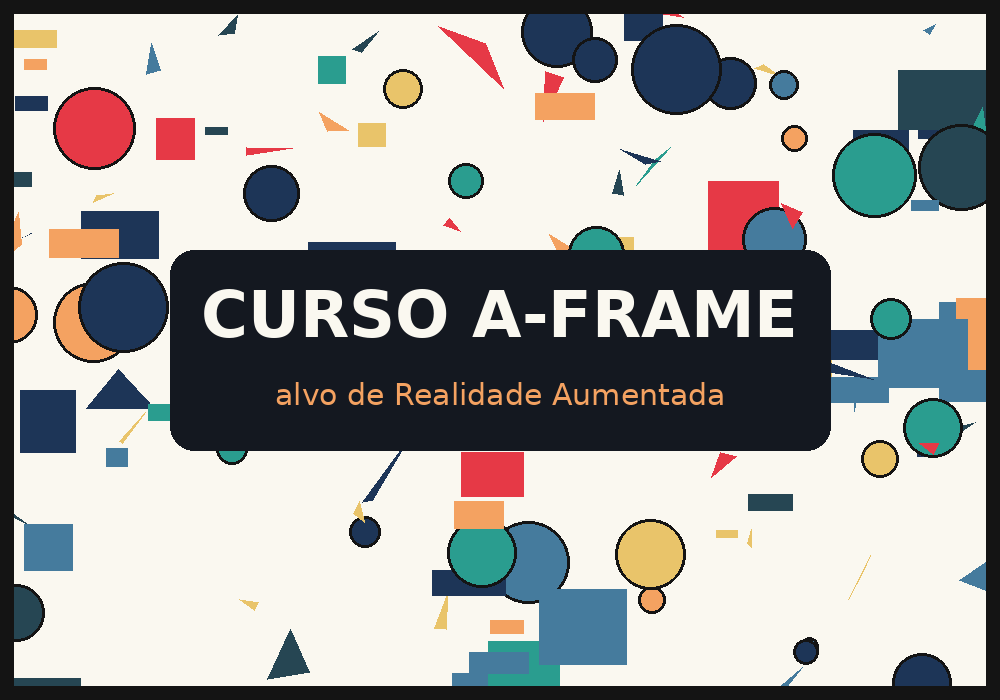

Marcadores e alvos de Realidade Aumentada
Imprima em A4 (tamanho real, sem "ajustar à página" se possível) ou abra esta página em outro aparelho e aponte o celular para a tela. Papel fosco funciona melhor que brilhante; evite dobras e reflexos.
Marcador HIRO
Exemplo 09 → astronauta · Exercício 4 (opção B) → seu modelo

Marcador do curso (padrão personalizado)
Exemplo 09 → peça CAD · arquivo de padrão: assets/marcadores/marcador-curso.patt
Imagem-alvo do MindAR
Exemplo 10 → peça CAD e lanterna · arquivo compilado: assets/marcadores/alvo-curso.mind
